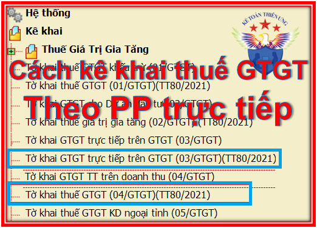

Hướng dẫn cách kê khai thuế GTGT theo phương pháp trực tiếp như: Cách kê khai thuế GTGT trực tiếp trên doanh thu và trực tiếp trên Giá trị gia tăng. Cách tính thuế GTGT theo pp trực tiếp phải nộp ... theo Thông tư 219, Thông tư 119, Thông tư 93 và Thông tư 80/2021/TT-BTC mới nhất hiện nay.

Lưu ý: Có 2 phương pháp kê khai thuế GTGT trực tiếp đó là: Kê khai thuế GTGT theo pp trực tiếp trên Doanh thu và trực tiếp trên Giá trị gia tăng. Dưới đây Kế toán Diệu Tâm xin hướng dẫn cụ thể 2 phương pháp này:
Theo điều 13 Thông tư 219/2013/TT-BTC được sửa đổi, bổ sung theo điều điều 3 Thông tư 119/2014/TT-BTC và điều 1 TT 93/2017/TT-BTC quy định cụ thể như sau:
1. Cách tính thuế GTGT theo phương pháp trực tiếp trên doanh thu:
a. Đối tượng áp dụng:
- Hộ, cá nhân kinh doanh;
- Tổ chức kinh tế khác.
- Doanh nghiệp và hợp tác xã mới thành lập.
- Những Doanh nghiệp, hợp tác xã đang hoạt động có doanh thu hàng năm < 1 tỷ đồng,
Chú ý: Những đối tượng sau được đăng ký kê khai theo pp khấu trừ:
|
Những Cơ sở kinh doanh được đăng ký tự nguyện áp dụng phương pháp khấu trừ thuế, bao gồm: a) Doanh nghiệp, hợp tác xã đang hoạt động có doanh thu hàng năm từ bán hàng hóa, cung ứng dịch vụ chịu thuế GTGT dưới một tỷ đồng đã thực hiện đầy đủ chế độ kế toán, sổ sách, hóa đơn, chứng từ theo quy định của pháp luật về kế toán, hóa đơn, chứng từ. b) Doanh nghiệp mới thành lập từ dự án đầu tư của cơ sở kinh doanh đang hoạt động nộp thuế giá trị gia tăng theo phương pháp khấu trừ. - Doanh nghiệp mới thành lập có thực hiện đầu tư theo dự án đầu tư được cấp có thẩm quyền phê duyệt thuộc trường hợp đăng ký tự nguyện áp dụng phương pháp khấu trừ thuế. - Doanh nghiệp, hợp tác xã mới thành lập có dự án đầu tư không thuộc đối tượng được cấp có thẩm quyền phê duyệt theo quy định của pháp luật về đầu tư nhưng có phương án đầu tư được người có thẩm quyền của doanh nghiệp ra quyết định đầu tư phê duyệt thuộc đối tượng đăng ký áp dụng phương pháp khấu trừ thuế. c) Doanh nghiệp, hợp tác xã mới thành lập có thực hiện đầu tư, mua sắm, nhận góp vốn bằng tài sản cố định, máy móc, thiết bị, công cụ, dụng cụ hoặc có hợp đồng thuê địa điểm kinh doanh. d) Tổ chức nước ngoài, cá nhân nước ngoài kinh doanh tại Việt Nam theo hợp đồng nhà thầu, hợp đồng nhà thầu phụ. đ) Tổ chức kinh tế khác hạch toán được thuế GTGT đầu vào, đầu ra không bao gồm doanh nghiệp, hợp tác xã. |
=> Trường hợp này nếu muốn kê khai theo pp khấu trừ thì nộp Tờ khai thuế GTGT Mẫu 01/GTGT cho cơ quan thuế (Chậm nhất là trước thời hạn nộp hồ sơ khai thuế kỳ đầu tiên)
Chi tiết xem tại đây nhé: Công văn 4253/TCT-CS của Tổng cục thuế
Lưu ý: Doanh nghiệp đang áp dụng phương pháp tính thuế trực tiếp trên giá trị gia tăng nhưng có doanh thu hàng năm trên 01 (một) tỷ đồng trở lên thì chuyển sang phương pháp khấu trừ cho kỳ kế toán tiếp theo được quy định tại Khoản 1, Điều 12 Thông tư số 219/2013/TT-BTC.
-----------------------------------------------------------------------------------------
b. Cách tính thuế GTGT phải nộp theo pp trực tiếp trên doanh thu:
| Số thuế GTGT phải nộp | = | Tỷ lệ % | x | Doanh thu |
b.1) Tỷ lệ % để tính thuế GTGT trên doanh thu như sau:
- Phân phối, cung cấp hàng hóa: 1%;
- Dịch vụ, xây dựng không bao thầu nguyên vật liệu: 5%;
- Sản xuất, vận tải, dịch vụ có gắn với hàng hóa, xây dựng có bao thầu nguyên vật liệu: 3%;
- Hoạt động kinh doanh khác: 2%.
Chi tiết các bạn xem tại đây:
Danh mục ngành nghề tính thuế GTGT theo tỷ lệ % trên doanh thu
b.2) Doanh thu để tính thuế GTGT theo tỷ lệ %:
- Là tổng số tiền bán hàng hóa, dịch vụ thực tế ghi trên hóa đơn bán hàng đối với hàng hóa, dịch vụ chịu thuế GTGT bao gồm các khoản phụ thu, phí thu thêm mà cơ sở kinh doanh được hưởng.
Trường hợp DN có doanh thu bán hàng hóa, cung ứng dịch vụ thuộc đối tượng không chịu thuế GTGT và doanh thu hàng hóa, dịch vụ xuất khẩu thì không áp dụng tỷ lệ (%) trên doanh thu đối với doanh thu này.
Ví dụ: Công ty Kế toán Diệu Tâm là doanh nghiệp kê khai, nộp thuế GTGT theo phương pháp trực tiếp. Công ty có doanh thu phát sinh từ hoạt động bán phần mềm máy tính và dịch vụ tư vấn thành lập doanh nghiệp thì Công ty không phải nộp thuế GTGT theo tỷ lệ (%) trên doanh thu từ hoạt động bán phần mềm máy tính (do phần mềm máy tính thuộc đối tượng không chịu thuế GTGT) và phải kê khai, nộp thuế GTGT theo tỷ lệ 5% trên doanh thu từ dịch vụ tư vấn thành lập doanh nghiệp.
Cơ sở kinh doanh nhiều ngành nghề có mức tỷ lệ khác nhau phải khai thuế GTGT theo từng nhóm ngành nghề tương ứng với các mức tỷ lệ theo quy định;
Trường hợp DN không xác định được doanh thu theo từng nhóm ngành nghề hoặc trong một hợp đồng kinh doanh trọn gói bao gồm các hoạt động tại nhiều nhóm tỷ lệ khác nhau mà không tách được thì sẽ áp dụng mức tỷ lệ cao nhất của nhóm ngành nghề mà cơ sở sản xuất, kinh doanh.
c. Hồ sơ khai thuế GTGT theo pp trực tiếp trên doanh thu:
- Tờ khai thuế giá trị gia tăng mẫu số 04/GTGT theo TT 80/2021/TT-BTC
Chi tiết mời các bạn xem thêm:
Cách lập tờ khai thuế GTGT mẫu 04/GTGT
d. Đối với hộ, cá nhân kinh doanh nộp thuế GTGT theo phương pháp khoán, cơ quan thuế xác định doanh thu, thuế GTGT phải nộp theo tỷ lệ % trên doanh thu của hộ khoán theo hướng dẫn tại khoản 2 Điều này căn cứ vào tài liệu, số liệu khai thuế của hộ khoán, cơ sở dữ liệu của cơ quan thuế, kết quả điều tra doanh thu thực tế và ý kiến của Hội đồng tư vấn thuế xã, phường.
Trường hợp hộ, cá nhân nộp thuế theo phương pháp khoán kinh doanh nhiều ngành nghề thì cơ quan thuế xác định số thuế phải nộp theo tỷ lệ của hoạt động kinh doanh chính.
Xem thêm: Hướng dẫn cách kê khai thuế theo phương pháp khoán
2. Cách kê khai thuế GTGT theo pp trực tiếp trên GTGT:
a. Đối tượng áp dụng:
- DN có hoạt động mua, bán, chế tác vàng bạc, đá quý.
Trường hợp DN có hoạt động mua, bán, chế tác vàng, bạc, đá quý thì phải hạch toán riêng hoạt động này để nộp thuế theo phương pháp tính trực tiếp trên giá trị gia tăng.
b. Cách tính thuế GTGT:
| Số thuế GTGT phải nộp | = | Giá trị gia tăng | x |
Thuế suất thuế GTGT |
Trong đó:
- Thuế suất thuế GTGT là 10% áp dụng đối với hoạt động mua, bán, chế tác vàng bạc, đá quý.
- Giá trị gia tăng của vàng, bạc, đá quý được xác định bằng giá thanh toán của vàng, bạc, đá quý bán ra trừ (-) giá thanh toán của vàng, bạc, đá quý mua vào tương ứng.
Giá thanh toán của vàng, bạc, đá quý bán ra là giá thực tế bán ghi trên hóa đơn bán vàng, bạc, đá quý, bao gồm cả tiền công chế tác (nếu có), thuế giá trị gia tăng và các khoản phụ thu, phí thu thêm mà bên bán được hưởng.
Giá thanh toán của vàng, bạc, đá quý mua vào được xác định bằng giá trị vàng, bạc, đá quý mua vào hoặc nhập khẩu, đã có thuế GTGT dùng cho mua bán, chế tác vàng, bạc, đá quý bán ra tương ứng.
- Trường hợp trong kỳ tính thuế phát sinh giá trị gia tăng âm (-) của vàng, bạc, đá quý thì được tính bù trừ vào giá trị gia tăng dương (+) của vàng, bạc, đá quý.
- Trường hợp không có phát sinh giá trị gia tăng dương (+) hoặc giá trị gia tăng dương (+) không đủ bù trừ giá trị gia tăng âm (-) thì được kết chuyển để trừ vào giá trị gia tăng của kỳ sau trong năm. Kết thúc năm dương lịch, giá trị gia tăng âm (-) không được kết chuyển tiếp sang năm sau.
c. Hồ sơ khai thuế:
- Tờ khai thuế giá trị gia tăng mẫu số 03/GTGT theo TT 80/2021/TT-BTC
3. Thời hạn nộp Tờ khai thuế + Tiền thuế:
- Thời hạn nộp hồ sơ khai thuế GTGT theo tháng chậm nhất là ngày 20 của tháng sau.
- Thời hạn nộp hồ sơ khai thuế GTGT theo quý chậm nhất là ngày cuối cùng của tháng đầu của quý sau.
Thời hạn nộp Tiền thuế GTGT (nếu có) cũng là Thời hạn nộp Tờ khai thuế GTGT nhé
- Nếu trong kỳ không phát sinh thì các bạn vẫn phải nộp Tờ khai trắng nhé.
Việc kê khai thuế GTGT theo PP trực tiếp trên GTGT đã được Chi cục thuế quận Gò Vấp hướng dẫn khá chi tiết tại Công văn 10812/CCTGV-TTHT ngày 10/5/2024, các bạn có thể tham khảo thêm.
----------------------------------------------------------------------------------
Chúc các bạn làm tốt công việc kế toán thuế!
Các bạn muốn học lập báo cáo quyết toán thuế cuối năm chuyên sâu trên phần mềm HTKK bằng hóa đơn thực tế thì có thể tham gia: Khóa học thực hành kế toán thuế
------------------------------------------------------------